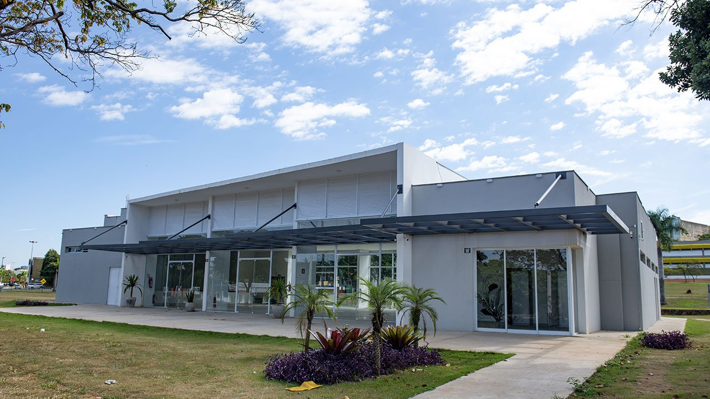
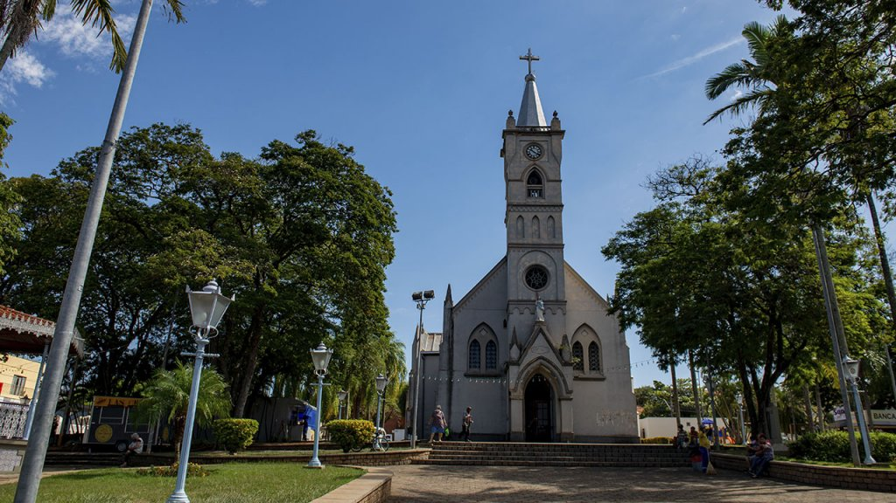
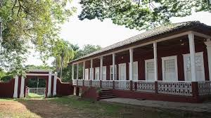
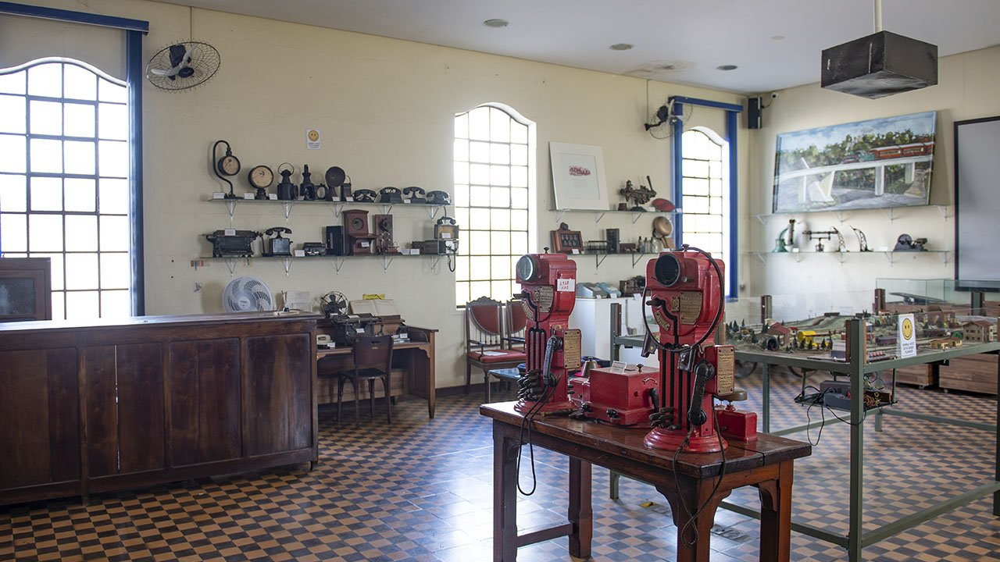
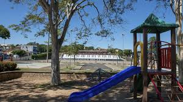
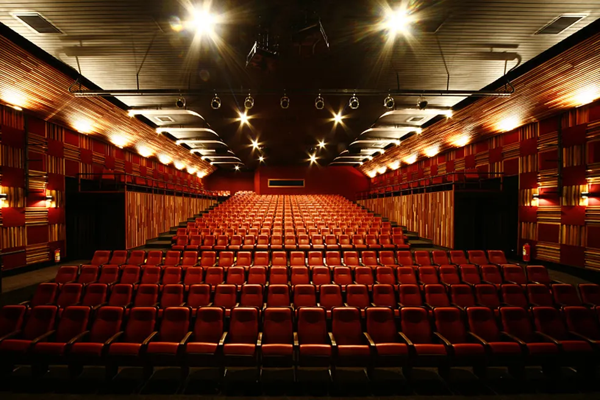

Estação de Trem Maria Fumaça
Viva a experiência de viajar em uma locomotiva histórica,
percorrendo belas paisagens e conhecendo a tradição ferroviária de
Jaguariúna.
Visitar

Parque dos Lagos
Um dos principais pontos de lazer da cidade, com lagos, trilhas,
áreas para piquenique e prática de esportes ao ar livre.
Visitar

Centro Cultural Professor Alfredo Almeida
Espaço dedicado à cultura, com exposições, apresentações artísticas
e eventos que valorizam a história local.
Visitar

Igreja Matriz Sant'Ana
Símbolo religioso e arquitetônico de Jaguariúna, a igreja encanta
pela beleza e importância histórica para a cidade.
Visitar

Fazenda da Barra
Antiga fazenda cafeeira, preserva construções históricas e oferece
passeios que contam a história do ciclo do café.
Visitar

Museu Ferroviário
Museu dedicado à memória ferroviária, com acervo de peças,
documentos e fotos que contam a evolução dos trens na região.
Visitar

Parque Santa Maria
Área verde com playground, quadras esportivas e espaço para
caminhadas, ideal para famílias e atividades ao ar livre.
Visitar

Teatro Municipal Dona Zenaide
Palco de grandes espetáculos, o teatro é referência cultural na
cidade, recebendo peças, shows e eventos diversos.
Visitar